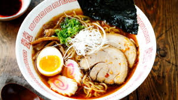

Food

Burga
This is a famous delicious Food
Ingredients:
- Ramen noodles
- Chicken or vegetable broth
- Flavor packet or seasoning (soy sauce, miso paste, etc.)
- Sliced pork, chicken, or tofu
- Green onions
- Spinach
- Mushrooms
- Seaweed
- Soft-boiled egg
- Sesame seeds
- Garlic
- Ginger
Steps
- Boil water in a pot.
- Add the ramen noodles to the boiling water.
- Cook the noodles for 3-4 minutes or until tender.
- While the noodles are cooking, prepare the broth.
- Heat the broth in a separate pot and bring it to a simmer.
- Add the flavor packet or your own seasonings to the broth.
- Once the noodles are cooked, drain them and add them to the broth.
- Top with your choice of protein (e.g., sliced pork, chicken, tofu).
- Add vegetables and garnishes (e.g., green onions, spinach, mushrooms, seaweed).
- Let the ramen sit for a minute to absorb the flavors.
- Serve the ramen hot and enjoy!